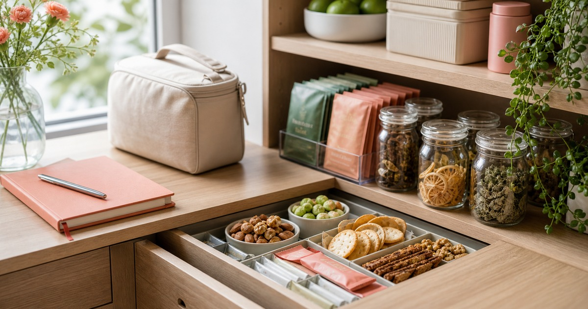

外食族的低負擔零食櫃：低醣點心、堅果、素食零嘴與沖泡飲
外食日的零食櫃先看份量、保存與成分標示，讓低醣點心、堅果與素食零嘴更好管理。

外食日真正容易失控的，常常不是正餐，而是下午、加班和回家前那段空白。零食櫃不需要把自己管得很嚴，而是讓你在餓的時候有幾個比較穩的選擇：份量清楚、成分標示看得懂、保存方式不麻煩。
先把點心分成三種任務
第一種是會議前後的小份量點心，重點是方便、不弄髒手；第二種是加班前的墊胃選項，重點是份量清楚；第三種是家中備品，重點是保存穩定且家人都看得懂標示。
低醣點心、堅果、素食零嘴和沖泡飲各自適合不同位置。不要把所有東西混在同一個抽屜，否則越忙越容易拿錯。
- 辦公室：小包裝、低氣味、好收拾。
- 通勤包：不易碎、不怕短暫移動。
- 家中櫃：保存期限清楚、方便輪替。
低負擔不是健康保證
低醣、素食、堅果或草本字眼，都不代表可以無限制食用。比較實際的判斷，是看份量、成分、糖分、油脂、鈉含量與自己一天的飲食狀態。
如果有糖分控制、過敏、腸胃、腎臟或特殊飲食需求，零食櫃更應該回到標示與專業建議，而不是跟著流行詞採買。
- 先看每份重量，不只看整包熱量。
- 堅果留意份量與保存。
- 沖泡飲留意糖分、咖啡因與成分。
Elite 嚴選
建立一個一週會吃完的小櫃
零食櫃最怕變成囤貨櫃。建議只放一週到兩週內真的會吃完的量，每週固定檢查一次，把快到期、開封過或口味不適合的品項先處理掉。
D 醣一刻、囍素堅果、本草養生 From Nature 與 JAYSUWAN 健素旺，可以分別從低醣點心、堅果、草本沖泡與素食營養品方向延伸；任何涉及營養或保健感的品項，都建議以商品標示與個人狀況保守判斷。
加班日的搭配要簡單
加班時最適合的不是最特別的點心，而是不需要思考、吃完能收拾乾淨的組合。像是一小包堅果搭配無糖茶，或一份標示清楚的點心搭配溫水，都比臨時買一大袋零食更容易控制。
如果你常在晚上吃點心，建議把咖啡因、糖分與份量放在前面看。讓點心只是補位，不要變成另一餐。
- 份量先分好。
- 口味不要太重。
- 避免把整袋放在桌上。
讓零食櫃保持可看見
透明盒、日期貼紙和小分裝，是比意志力更可靠的整理工具。你看得見剩多少，就比較不會重複購買，也能更快發現哪些品項其實不適合自己。
本文只作一般生活整理，不構成營養、醫療或個人化飲食建議。若有特殊健康需求，請先諮詢合格專業人員。
同主題品牌參考
FAQ
這篇文章會直接推薦單一品牌嗎？
不會。本文會把不同品牌放回生活情境中比較，協助讀者判斷使用頻率、收納位置與商品頁資訊，而不是把單一品牌寫成唯一答案。
商品價格、活動或庫存可以以本文為準嗎？
不可以。價格、活動、庫存、規格與配送條件都可能變動，請以下單前看到的商品頁或店家頁公告為準。
如果內容涉及健康、寵物或照護用品，應該怎麼判斷？
請把本文視為一般生活採買整理，不要當成醫療、營養、獸醫或個人化建議；若有健康、照護或寵物狀況，應先詢問合格專業人員。
下一步建議
先用一週份量建立零食櫃，再依工作日、通勤與居家情境補上合適選項。
重要警語
本文不構成營養、醫療或個人化飲食建議；不得承諾控糖、減重、代謝或健康效果。 本文僅供一般生活資訊與選購情境參考，不構成醫療、營養、獸醫或個人化建議；若涉及健康、照護、飲食、受傷、疾病或寵物狀況，請先諮詢合格專業人員。
本文含品牌／商品導購連結；若你透過部分商品連結前往選購，Elite Fashion 可能取得合作收益。本文仍以編輯判斷與使用情境整理為主，價格、規格、活動與庫存請以商品頁公告為準。